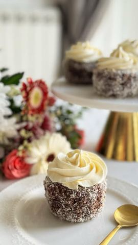

Moja beleška
SačuvanoSastojci
- Za sos od višnje
- Za muffine
- Za čokoladni premaz
- Za dekoraciju
Priprema
Priprema sosa od višnje: 1. U šerpicu staviti višnje, šećer, gustin, limunov sok i koricu. 2. Kuvati na srednjoj vatri oko 10 minuta uz povremeno mešanje, dok se smesa ne zgusne. 3. Ostaviti da se ohladi i ukoliko više volite - izblendajte smesu. Priprema muffina: 1. Zagrejati rernu na 180°C i obložiti kalupe za muffine papirnim korpicama. 2. Maslac i šećer penasto umutiti. Dodati jaja, grčki jogurt, vanilu i mleko, pa još kratko umutiti. 3. U drugoj posudi pomešati brašno, prašak za pecivo i so. 4. Postepeno dodavati suve sastojke u mokre, mešajući tek toliko da se sjedini. 5. Smesu rasporediti u kalupe (otprilike do ¾ visine) i peći 15 minuta. 6. Ostaviti da se muffini prohlade. Priprema čokoladnog premaza: 1. Na pari otopiti čokoladu, mleko i puter dok ne dobijete glatku smesu. Sastavljanje muffin čupavaca: 1. Ohlađene muffine izdubiti (možete i kašičicom) 2. Umakati ih u čokoladu, zatim odmah uvaljati u kokos. 3. Napuniti izdubljeni deo ohlađenim sosom od višnje. 4. Umutiti slatku pavlaku sa šećerom u prahu i vanilom, pa dekorisati svaki muffin. Ovi muffin čupavci su sočni, kremasti i savršeno se tope u ustima – pravi praznik za nepca!
Originalni opis sa Instagrama
Muffin Čupavci punjeni višnjama 🧁🥥🍒 Sastojci: Za sos od višnje: • 200 g smrznutih višanja • 1 kašičica gustina • 70 g šećera • Korica i sok pola limuna Za muffine: • 100 g putera (sobne temperature) • 130 g šećera • 2 jaja • 50 g grčkog jogurta • 2 kašičice ekstrakta vanile • 170 g brašna • 1 kašičica praška za pecivo • ½ kašičice soli • 80 ml mleka Za čokoladni premaz: • 200 g čokolade za kuvanje • 150 ml mleka • 200 g putera (margarina) Za dekoraciju: • 250 ml slatke pavlake • 1 kašičica ekstrakta vanile • 2 kašike šećera u prahu • Kokos Priprema sosa od višnje: 1. U šerpicu staviti višnje, šećer, gustin, limunov sok i koricu. 2. Kuvati na srednjoj vatri oko 10 minuta uz povremeno mešanje, dok se smesa ne zgusne. 3. Ostaviti da se ohladi i ukoliko više volite - izblendajte smesu. Priprema muffina: 1. Zagrejati rernu na 180°C i obložiti kalupe za muffine papirnim korpicama. 2. Maslac i šećer penasto umutiti. Dodati jaja, grčki jogurt, vanilu i mleko, pa još kratko umutiti. 3. U drugoj posudi pomešati brašno, prašak za pecivo i so. 4. Postepeno dodavati suve sastojke u mokre, mešajući tek toliko da se sjedini. 5. Smesu rasporediti u kalupe (otprilike do ¾ visine) i peći 15 minuta. 6. Ostaviti da se muffini prohlade. Priprema čokoladnog premaza: 1. Na pari otopiti čokoladu, mleko i puter dok ne dobijete glatku smesu. Sastavljanje muffin čupavaca: 1. Ohlađene muffine izdubiti (možete i kašičicom) 2. Umakati ih u čokoladu, zatim odmah uvaljati u kokos. 3. Napuniti izdubljeni deo ohlađenim sosom od višnje. 4. Umutiti slatku pavlaku sa šećerom u prahu i vanilom, pa dekorisati svaki muffin. Ovi muffin čupavci su sočni, kremasti i savršeno se tope u ustima – pravi praznik za nepca! Hvala @muffinmunchies_ na savršenoj ideji i proverenom receptu! ❤️ • • • #cupavci #domacikolaci #uskrsnjatrpeza #ukusnoilako #recepti #ukusnahrana #ukusnirecepti #muffin